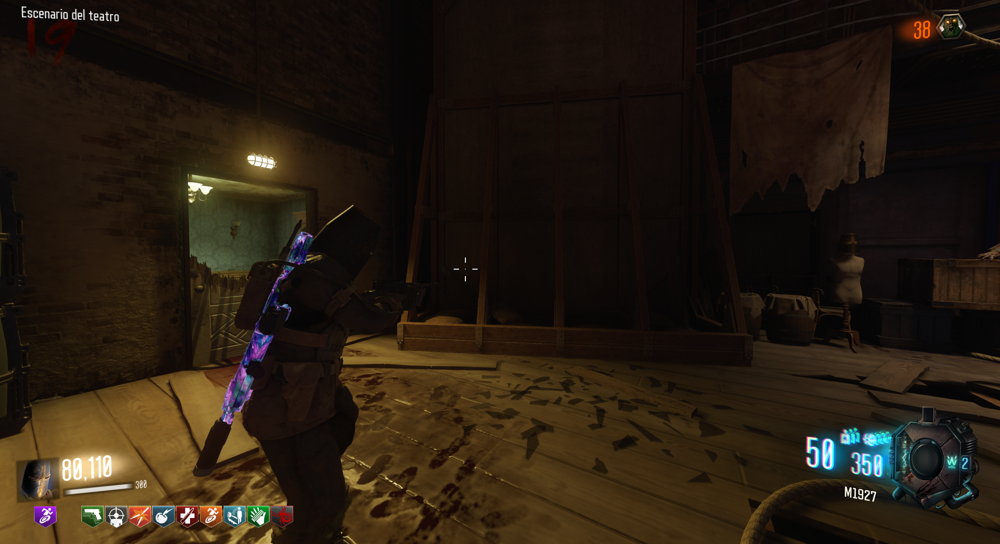
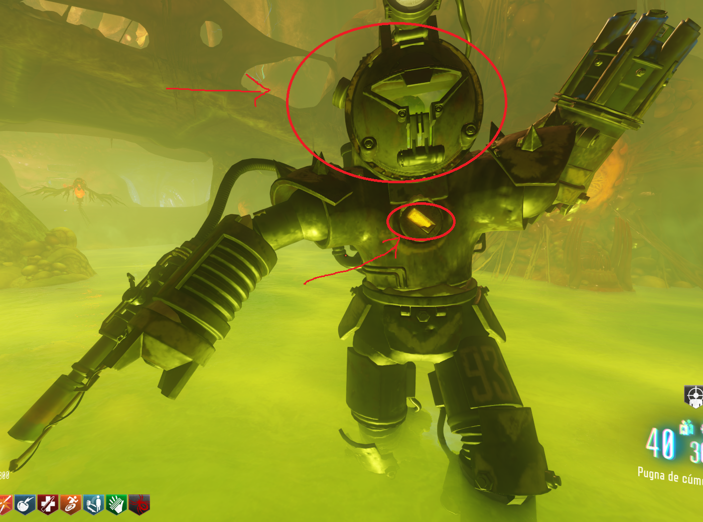
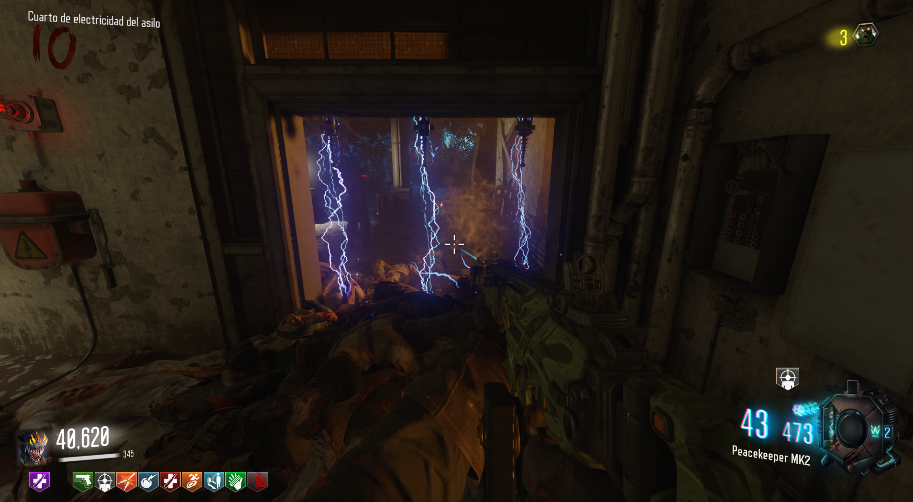
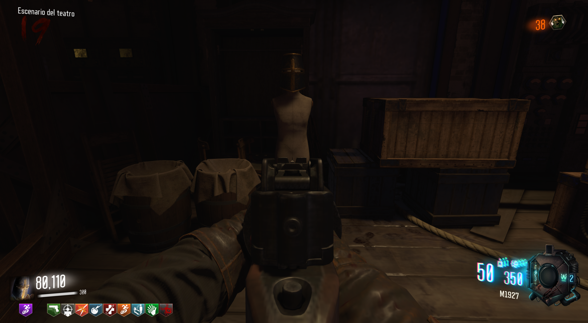

Casco de Caballero Templario (Revelations)

El casco de Caballero Templario nos dará lo siguiente:
El jugador inflige 33% más de daño a los jefes.
Los efectos elementales de las muertes de zombies no causan daño.
50% de reducción de daño de todos los jefes.
Aumento en la duración de sprint.
Lo primero será tener la máscara de lobos, es obligatorio.
Tendremos que quitarle el casco a un Panzer y eliminar su núcleo, se puede hacer al mismo o a dos diferentes.

Después tendremos que matar a 30 zombies con trampas.

Cuando lo hagamos, iremos a Kino der Toten y podremos reclamar el casco.
